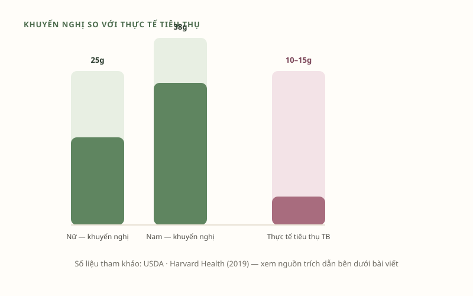
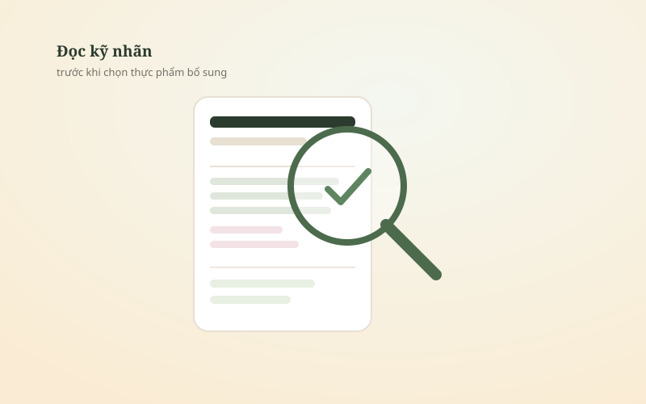
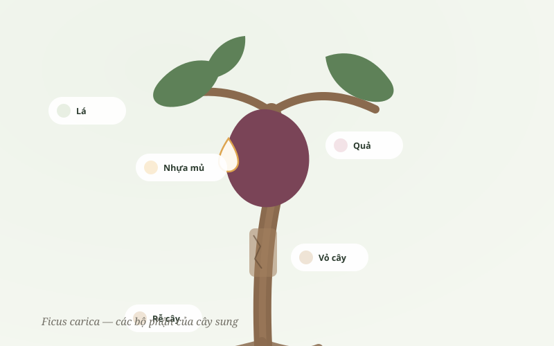
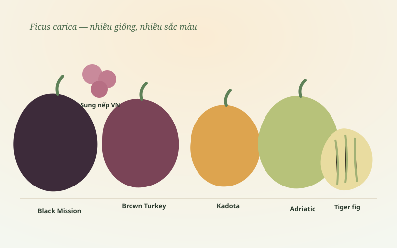

Công nghệ chế biến
Sấy thăng hoa là gì? Vì sao giữ trọn dưỡng chất hơn cách sấy thông thường
Giải mã công nghệ sấy thăng hoa — từ nguyên lý đá thăng hoa thành hơi đến lý do nó giữ cấu trúc, chất xơ tốt hơn phơi nắng hay sấy nhiệt.
Những bài viết ngắn gọn, có trích dẫn khoa học rõ nguồn, giúp bạn hiểu đúng về công nghệ sấy thăng hoa, về quả sung, cỏ sữa lá lớn và cách chăm sóc hệ tiêu hoá — viết bởi đội ngũ FigMyHealth.

5 bài viết, cập nhật liên tục
Giải mã công nghệ sấy thăng hoa — từ nguyên lý đá thăng hoa thành hơi đến lý do nó giữ cấu trúc, chất xơ tốt hơn phơi nắng hay sấy nhiệt.
Nhìn lại các nghiên cứu công khai về thành phần dinh dưỡng và hoạt chất trong quả sung — chất xơ, kali, polyphenol.
Từ bài thuốc dân gian đến các ghi nhận khoa học hiện đại về Euphorbia hirta — góc nhìn cân bằng, không thổi phồng.

Khuyến nghị 25–38g chất xơ mỗi ngày, nhưng thực tế nhiều người chỉ nạp chưa tới một nửa. Chất xơ hoà tan là gì?

Những dấu hiệu cảnh báo theo khuyến cáo của Bộ Y tế, và cách đọc nhãn/hồ sơ công bố trước khi mua.

Không chỉ quả — lá, nhựa mủ, vỏ và rễ cây sung đều từng được dùng trong kinh nghiệm dân gian. Đối chiếu với nghiên cứu khoa học công khai.

Từ Black Mission tím đen đến sung nếp Việt Nam — nguồn gốc, đặc điểm và dữ liệu khoa học về các giống sung phổ biến.